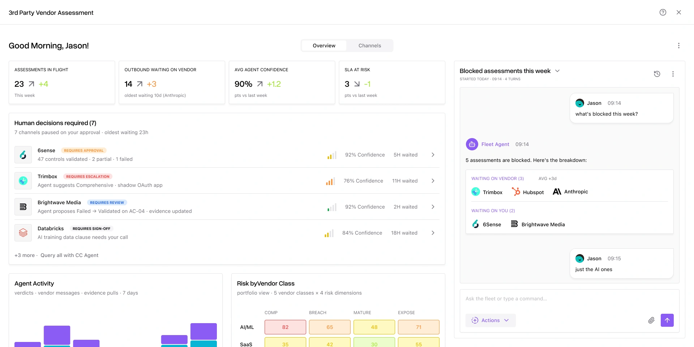
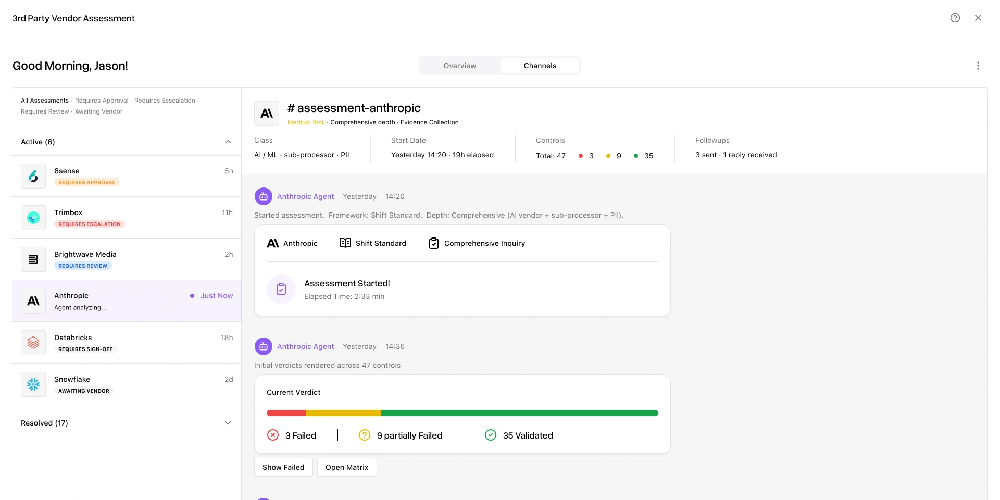

An AI agent that runs third-party vendor assessments end to end, while your security team supervises its work and makes the decisions.
No
Yes
Others add an assistant to the analyst’s workspace. We build the workspace for the person supervising the agent.
The analyst completes the assessment. AI helps.
The agent completes the assessment. The supervisor decides.
An agent does the repetitive assessment work. A human reviews exceptions and stays accountable for decisions.
A person approves every follow-up and agent recommendation. The agent earns more scope only where trust is proven.
How many vendors one analyst can keep fully assessed, without lowering the quality of each assessment.
Yes
No
No
Yes
An operations console for every assessment in flight, grouped by whether a person needs to step in.
One two-way thread per assessment: evidence, questions, follow-ups, proposed verdicts and decisions.
“Start onboarding for 6sense.com.” “Why is the Trimbox assessment blocked?”

Seven decisions waiting, ranked by urgency and agent confidence.

The agent’s work for one vendor, with every verdict open to questions.
Pinned, with evidence in view, and signed off by a person.
Competitors are moving to agent-led work. Our internal experiments show the capability works.
Enterprise customers will trust an agent that communicates with their vendors.
A person approves every follow-up or agent recommendation. We learn where trust holds before asking for more.
Agent runs a Quick assessment on public data, drafts vendor follow-ups for approval, and turns replies into proposed verdicts.
≥ 80% drafts approved unedited, overrides ≤ 10%, after 90 days with design partners.
The agent runs whole assessments; people review exceptions in the fleet view and channels.
Analyst hours −50%, zero critical findings missed in audit samples.
Plain-language policy; autonomy expands only where measured results support it.
Per-customer override and accuracy data.
more assessments completed than each analyst’s current baseline
analyst time per assessment, from ~20 h
of follow-up drafts approved unedited
of agent verdicts overridden by people
design partners keep using it
Stop at once: an email reaches a vendor without a person’s approval, or vendor data crosses between customers.
At day 90: drafts approved unedited are below 80% or overrides are above 10%, or a design partner stops using it. We fix or stop before Phase 2.
Spreadsheet-and-email assessments cost hundreds of hours and let gaps slip through.
Competitors are moving to AI, but they add an assistant to the analyst’s workspace.
We build the workspace for the person supervising the agent.
Three connected surfaces: fleet view, assessment channel and command bar.
The agent does the work. People set the rules and own the decisions.
+30% completed · ≥ 80% drafts approved unedited · ≤ 10% overridden
ARR impact (est.)
30% analyst hours saved
1.3× vendors per supervisor
ARR impact (est.)
50% analyst hours saved
2× vendors per supervisor
ARR impact (est.)
70% analyst hours saved
3× vendors per supervisor
Same team covers more vendors at the same depth.
Add-on or tier uplift, and stronger deals against AI-first peers.
Customers stay instead of moving to a vendor selling autonomy.
Est. = planning figures, not measured. ARR assumes 50 enterprise customers, a $25k/yr add-on, and 20% / 35% / 50% attach.